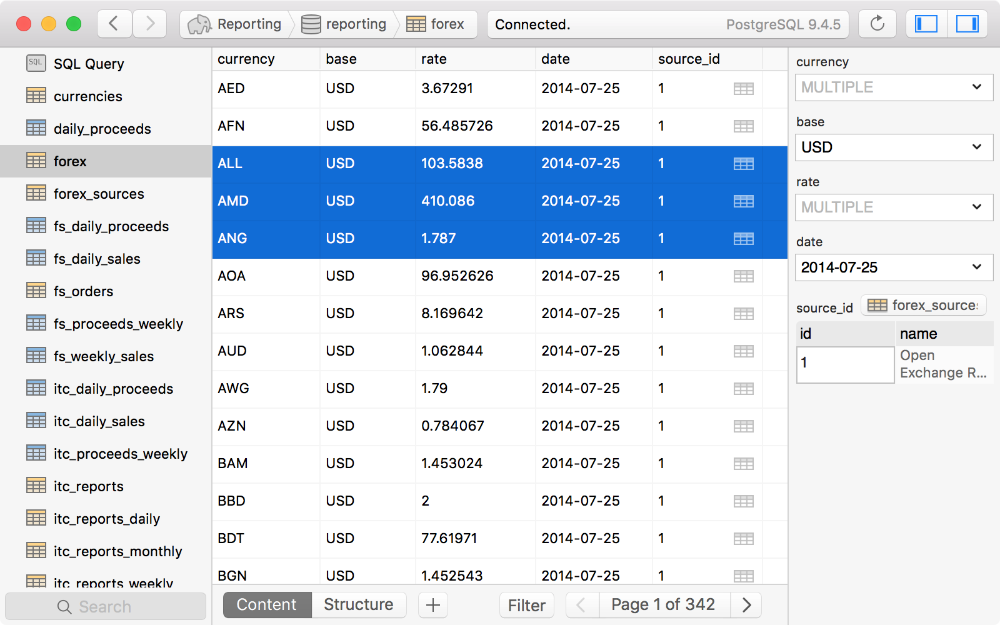

Postgres
Presented by Tom Friedhof
Tom Friedhof

- Senior Solutions Architect at ActiveLAMP
- @tomfriedhof
- @activelamp
What is Postgres?
- Relational Database (RDBMS)
- Supports schemaless document storage
- Not controlled by a corporation or private entity
Why use Postgres?
- It's super fast! (comparable to innodb on Mysql or Mariadb)
- Don't have to pay license fees when embedded in commercial software
- Best of both worlds RDBMS and DocumentStorage
Some stuff I learned.
Postgres is statically typed
finance_service=# select count(*) from "Purchases" WHERE echpro = 0;
ERROR: operator does not exist: character varying = integer
LINE 1: select count(*) from "Purchases" WHERE echpro = 0;
^
HINT: No operator matches the given name and argument type(s). You might need to add explicit type casts.
The operator has to match the type
finance_service=# select count(*) from "Purchases" WHERE echpro = CAST('0' as VarChar);
count
-------
54
(1 row)
Table names get converted to lowercase
finance_service=# \d Purchases
Did not find any relation named "Purchases".
Surround mixed case with quotes
finance_service=# \d "Purchases"
Table "public.Purchases"
Column | Type | Modifiers
----------------+--------------------------+----------------------------------------------------------
id | integer | not null default nextval('"Purchases_id_seq"'::regclass)
createdAt | timestamp with time zone |
updatedAt | timestamp with time zone |
deletedAt | timestamp with time zone |
deal_date | timestamp with time zone |
deal_number | character varying(255) |
model | character varying(255) |
salesperson_id | character varying(255) |
ProfileId | character varying(255) |
tftpro | character varying(255) |
echpro | character varying(255) |
fabpro | character varying(255) |
extpro | character varying(255) |
svcpro | character varying(255) |
tireshldpro | character varying(255) |
tyronpro | character varying(255) |
location | character varying(255) |
product_sku | character varying(255) |
secondary | boolean |
Indexes:
"Purchases_pkey" PRIMARY KEY, btree (id)
Lots of slash commands
finance_service=# \?
General
\copyright show PostgreSQL usage and distribution terms
\g [FILE] or ; execute query (and send results to file or |pipe)
\gset [PREFIX] execute query and store results in psql variables
\q quit psql
\watch [SEC] execute query every SEC seconds
Help
\? [commands] show help on backslash commands
\? options show help on psql command-line options
\? variables show help on special variables
\h [NAME] help on syntax of SQL commands, * for all commands
Query Buffer
\e [FILE] [LINE] edit the query buffer (or file) with external editor
\ef [FUNCNAME [LINE]] edit function definition with external editor
\p show the contents of the query buffer
\r reset (clear) the query buffer
\s [FILE] display history or save it to file
\w FILE write query buffer to file
Input/Output
\copy ... perform SQL COPY with data stream to the client host
\echo [STRING] write string to standard output
\i FILE execute commands from file
\ir FILE as \i, but relative to location of current script
\o [FILE] send all query results to file or |pipe
\qecho [STRING] write string to query output stream (see \o)
Informational
(options: S = show system objects, + = additional detail)
\d[S+] list tables, views, and sequences
\d[S+] NAME describe table, view, sequence, or index
\da[S] [PATTERN] list aggregates
\db[+] [PATTERN] list tablespaces
\dc[S+] [PATTERN] list conversions
\dC[+] [PATTERN] list casts
\dd[S] [PATTERN] show object descriptions not displayed elsewhere
\ddp [PATTERN] list default privileges
\dD[S+] [PATTERN] list domains
\det[+] [PATTERN] list foreign tables
\des[+] [PATTERN] list foreign servers
\deu[+] [PATTERN] list user mappings
\dew[+] [PATTERN] list foreign-data wrappers
\df[antw][S+] [PATRN] list [only agg/normal/trigger/window] functions
\dF[+] [PATTERN] list text search configurations
\dFd[+] [PATTERN] list text search dictionaries
\dFp[+] [PATTERN] list text search parsers
\dFt[+] [PATTERN] list text search templates
\dg[+] [PATTERN] list roles
\di[S+] [PATTERN] list indexes
\dl list large objects, same as \lo_list
\dL[S+] [PATTERN] list procedural languages
\dm[S+] [PATTERN] list materialized views
\dn[S+] [PATTERN] list schemas
\do[S] [PATTERN] list operators
\dO[S+] [PATTERN] list collations
\dp [PATTERN] list table, view, and sequence access privileges
\drds [PATRN1 [PATRN2]] list per-database role settings
\ds[S+] [PATTERN] list sequences
\dt[S+] [PATTERN] list tables
\dT[S+] [PATTERN] list data types
\du[+] [PATTERN] list roles
\dv[S+] [PATTERN] list views
\dE[S+] [PATTERN] list foreign tables
\dx[+] [PATTERN] list extensions
\dy [PATTERN] list event triggers
\l[+] [PATTERN] list databases
\sf[+] FUNCNAME show a functions definition
\z [PATTERN] same as \dp
Can I get a GUI please?


Questions?
Send me an email:
tom@activelamp.comor in IRC #drupal-la